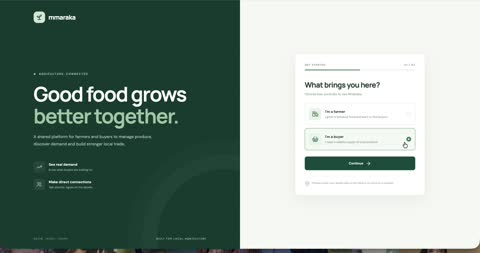
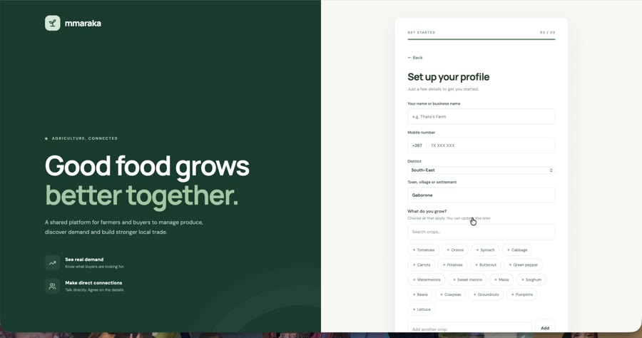
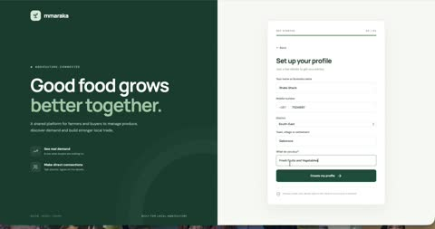
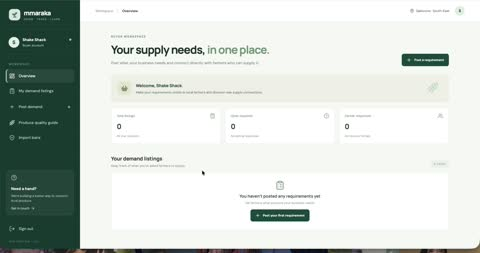
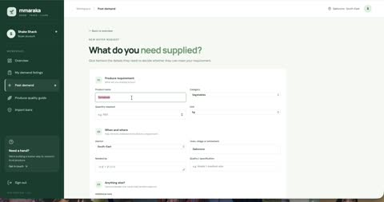
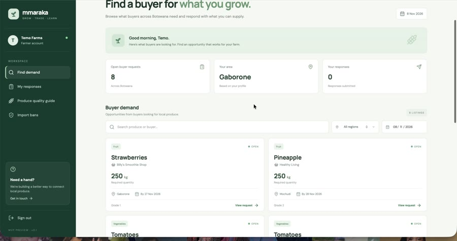

01
Project overview
Mmaraka is an agritech platform exploring how digital technology can make agricultural demand more visible and accessible to farmers while helping buyers connect with potential suppliers.
The concept was developed approximately three years ago around a central question:
How might farmers gain better visibility into what buyers need, rather than relying solely on existing trading relationships to identify potential markets?
The idea has since evolved into an interactive prototype with separate experiences for farmers and buyers.

Mmaraka is intended to develop beyond a conventional produce marketplace, bringing together three connected areas:
Grow
Farm and crop production
Production management for farmers.
Trade
Demand and supply matching
Buyer demand matched with farmer supply.
Learn
Agricultural knowledge
Produce quality information and guidance.
The current MVP focuses primarily on the Trade experience.
02
The problem space
Agricultural trade requires coordination between producers and potential purchasers.
Farmers need ways to identify purchasing opportunities and communicate what they can supply. Buyers need to communicate their requirements, including product type, quantity, quality, location and required delivery date.
Mmaraka explores whether a shared digital environment could make these requirements more visible and facilitate initial connections between the two groups.
Initial problem hypothesis
If buyers can communicate their agricultural requirements through a shared platform, farmers may have better visibility into potential purchasing opportunities and be able to respond based on their available produce.
This is an initial product hypothesis, not a validated research finding. Further conversations with farmers and buyers are needed to establish the extent of the problem and how they currently navigate it.
03
Understanding the users
Mmaraka currently considers two primary user groups.
Buyers
Communicating what they need
Potential users include retailers, supermarkets, restaurants, food processors, institutions and agricultural traders. Their primary need is to communicate purchasing requirements and discover potential suppliers.
Farmers
Finding who needs what they grow
Potential users include arable and pastoral farmers. Their primary need is to discover buyer demand, understand purchasing requirements and communicate the produce they can supply.
An important product consideration is that these roles are not necessarily mutually exclusive. A farmer may also purchase agricultural produce, so the longer-term account structure should support multiple roles.


User profiles and needs are currently informed by the initial product concept and contextual assumptions. Formal user research remains a future activity.
04
Product approach
Rather than attempting to build a complete agricultural trading ecosystem immediately, I focused the initial MVP on one central interaction: connecting buyer demand with farmer supply.
Buyer journey
- Create a buyer profile.
- Publish a demand listing.
- Specify the product, category, quantity and unit.
- Describe quality requirements, budget and location.
- Provide a required date and contact information.
- Review responses from interested farmers.
- Contact potential suppliers directly.


Farmer journey
- Create a farmer profile.
- Browse available buyer demand.
- Search and filter listings.
- Review individual purchasing requirements.
- Respond with the quantity they can supply and their earliest availability.
- Connect with interested buyers through direct contact.

Product decision: allow partial supply
In the prototype walkthrough, a buyer requested 800 kg of onions. The farmer submitted an offer for 600 kg, with an indicated availability date.
The platform should let a farmer respond with what they can actually supply, rather than forcing them to fulfil the whole request or not respond at all.
05
Design and development
Moving from concept to an interactive MVP
I developed the front end using React and Vite, with CSS for styling and browser localStorage for initial data persistence.
The current prototype includes:
- Separate farmer and buyer experiences.
- Profile creation and role selection.
- Buyer demand creation.
- Agricultural demand discovery and filtering.
- Listing detail views.
- Farmer supply responses.
- Partial-quantity offers.
- Farmer response history.
- Buyer response workspace.
- Produce quality guidance.
Try the prototype
The current build is live and can be explored in the browser: open the Mmaraka prototype ↗
A suggested route on the farmer side: set up a profile, browse buyer demand, open a listing and respond with a partial quantity. On the buyer side: create a buyer profile, publish a demand listing and review the dashboard.
Because the prototype uses localStorage, everything you enter stays in your own browser. Nothing is shared with other visitors, so a buyer and a farmer cannot yet see each other's activity. Section 07 explains why.
Known issue: as a buyer, the Farmer responses page currently shows a blank area instead of an empty-state message. This is documented in section 06.
Design considerations
01
Different users, connected workflows
The farmer and buyer experiences have different objectives, but they need to operate within one coherent product.
02
Information clarity
Listings need to communicate practical information clearly, including product, quantity, quality requirements, location and availability.
03
Reducing unnecessary complexity
The MVP focuses on facilitating discovery and initial contact rather than managing every aspect of an agricultural transaction.
04
Desktop-first development
An initial development decision, not a conclusion about how farmers should ultimately access the platform. Mobile accessibility will need to be evaluated against actual user contexts and research.
06
Iteration and usability observations
Building the prototype and walking through both user experiences helped identify interface issues that were not necessarily apparent during implementation.
Empty states and system feedback
During the buyer walkthrough, selecting the Farmer responses page resulted in a blank content area. This is different from an intentional empty state. A blank page can make it appear as though the application has failed to load.
Proposed improvement
Display a clear message explaining that no farmer responses have been received yet. The farmer response workspace also needs to communicate clearly when there are no submitted responses.
Issue identified during walkthrough. Implementation and retesting pending.
Produce quality and grading
The prototype includes a general Produce Quality Guide, but crop-specific grading requirements require further investigation. Botswana-specific standards need to be verified before official grade definitions are presented as authoritative.
General guidance available. Official crop-specific standards remain to be verified.
Scope decision: import restrictions
An import-restrictions feature was explored during development. However, reliable and current regulatory information could not be established for the prototype. I decided to defer this feature rather than publish potentially outdated or unverified information.
Excluded from the current MVP scope.
07
Technical implementation and constraints
| Technology | Application |
|---|---|
| React | Interface development |
| Vite | Development environment and build tooling |
| CSS | Interface styling |
| localStorage | Initial browser-based data persistence |
| Vercel | Hosting for the live prototype |
Current limitations
The prototype is currently a front-end demonstration rather than a fully connected multi-user application. Because it uses localStorage:
- Data is stored within the browser environment.
- Different users cannot reliably access shared live information.
- Production authentication is not implemented.
- Real-time updates are not implemented.
- Buyer listings and farmer responses are not yet synchronised through a shared backend.
The next technical milestone is integrating Supabase for authentication, shared data persistence, database relationships and access control.
08
Prototype walkthroughs
I conducted walkthroughs of the prototype from both the farmer and buyer perspectives. These were exploratory self-directed walkthroughs, not formal usability tests with target users.
The farmer walkthrough demonstrated profile creation, demand discovery, listing details, partial-supply response submission and response history.
The buyer walkthrough demonstrated buyer profile creation, demand listing creation, dashboard metrics and navigation to the response workspace.
The walkthroughs helped identify a confirmed blank-page issue in the buyer response workspace. They did not establish that independently registered users can exchange information through a shared live backend.
You can follow the same routes yourself in the live prototype ↗
09
Current project status
| Area | Status |
|---|---|
| Product concept | Established |
| Farmer experience | Prototype implemented |
| Buyer experience | Prototype implemented |
| Live prototype | Deployed |
| Demand creation | Demonstrated |
| Demand discovery and filtering | Demonstrated |
| Partial supply responses | Demonstrated |
| Farmer response history | Demonstrated |
| Buyer response workspace | UI issue identified |
| Produce quality guidance | General guide implemented |
| Official crop grading | Verification pending |
| Import restrictions | Deferred |
| Supabase integration | Not started |
| Formal user research | Not conducted |
| Target-user usability testing | Not conducted |
10
Next steps
- Resolve the blank buyer response page.
- Review and retest empty states.
- Review quality terminology in demonstration listings.
- Preserve the current interface as a stable baseline.
- Design the database structure.
- Introduce Supabase authentication.
- Establish farmer and buyer profiles that can support multiple roles.
- Connect buyer demand listings and farmer responses.
- Introduce appropriate data ownership and access controls.
- Engage potential farmers and buyers.
- Investigate current agricultural trading practices.
- Test the product with intended users.
- Refine the experience based on observed needs.
- Develop the Grow production-management experience.
- Expand the Learn knowledge centre.
- Evaluate mobile accessibility.
- Explore production records and how they might inform available supply.
11
Reflections and learning
Mmaraka has become an opportunity to explore product design beyond the visual interface. Developing the platform requires consideration of how different users interact with the same system, how information is structured, how workflows connect and how technical decisions influence the overall experience.
It has also reinforced the importance of distinguishing between assumptions and evidence.
One of the most valuable aspects of building the prototype has been identifying questions and interface gaps through implementation and walkthroughs. Some of these issues would not necessarily have been apparent at the conceptual stage.
As development continues, I want to use Mmaraka to explore the relationship between human behaviour, technology and product design, particularly within the context of agricultural markets in Botswana.